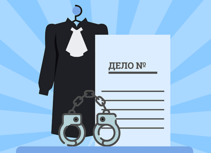
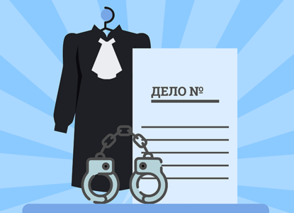

Уголовное дело
Введение:
Адвокаты играют важную роль в юридической системе, особенно в рамках уголовного права. В уголовных делах
адвокаты представляют интересы обвиняемых и сохраняют принципы справедливости и правового гарантирования.
В данной статье мы ознакомимся с основными аспектами уголовного дела и некоторыми стратегиями, которые
используют адвокаты для защиты своих клиентов.
1. Предварительное расследование:
Уголовное дело начинается с предварительного расследования, которое проводит правоохранительный орган.
Адвокат должен быть непосредственно вовлечен в это расследование и активно защищать права и интересы
подзащитного. Адвокат имеет право присутствовать при допросе своего клиента и обеспечить соблюдение его
процессуальных гарантий.
2. Подготовка к суду: Одной из важнейших стратегических задач адвоката является подготовка к суду. Это включает в себя изучение всех материалов дела, проведение дополнительных расследований, сбор доказательств, определение общей стратегии защиты и подготовку аргументов.
3. Выстраивание аргументации: Адвокат должен тщательно выстраивать аргументацию в пользу обвиняемого. Это может включать проверку законности доказательств, возражение против допустимости некоторых свидетельских показаний или экспертных заключений, а также представление альтернативных объяснений происходящего.
4. Работа со свидетелями: Как адвокат, вы имеете возможность задавать вопросы свидетелям и допрашивать их в интересах вашего клиента. Это важный аспект работы адвоката, так как свидетельские показания могут иметь решающее значение в уголовном деле. Навык задавать правильные вопросы и раскрывать несостыковки в показаниях свидетелей является ключевым для успешной защиты.
 5. Альтернативные стратегии: Адвокату необходимо быть готовым к возможности применения альтернативных стратегий защиты, таких как согласование суда о снижении обвинения, предложение сделки или обращение в суд с ходатайством о назначении более мягкого наказания. Разработка эффективных стратегий требует глубокого понимания правовых норм и знания процессуальных особенностей.
Заключение: Адвокаты играют важную роль в уголовном процессе и имеют большую ответственность за защиту прав и интересов обвиняемых. Они должны быть хорошо подготовлены, профессиональны и тщательно анализировать каждое уголовное дело. Это помогает обеспечить справедливый процесс и защитить права своих клиентов.
2. Подготовка к суду: Одной из важнейших стратегических задач адвоката является подготовка к суду. Это включает в себя изучение всех материалов дела, проведение дополнительных расследований, сбор доказательств, определение общей стратегии защиты и подготовку аргументов.
3. Выстраивание аргументации: Адвокат должен тщательно выстраивать аргументацию в пользу обвиняемого. Это может включать проверку законности доказательств, возражение против допустимости некоторых свидетельских показаний или экспертных заключений, а также представление альтернативных объяснений происходящего.
4. Работа со свидетелями: Как адвокат, вы имеете возможность задавать вопросы свидетелям и допрашивать их в интересах вашего клиента. Это важный аспект работы адвоката, так как свидетельские показания могут иметь решающее значение в уголовном деле. Навык задавать правильные вопросы и раскрывать несостыковки в показаниях свидетелей является ключевым для успешной защиты.
 5. Альтернативные стратегии: Адвокату необходимо быть готовым к возможности применения альтернативных стратегий защиты, таких как согласование суда о снижении обвинения, предложение сделки или обращение в суд с ходатайством о назначении более мягкого наказания. Разработка эффективных стратегий требует глубокого понимания правовых норм и знания процессуальных особенностей.
Заключение: Адвокаты играют важную роль в уголовном процессе и имеют большую ответственность за защиту прав и интересов обвиняемых. Они должны быть хорошо подготовлены, профессиональны и тщательно анализировать каждое уголовное дело. Это помогает обеспечить справедливый процесс и защитить права своих клиентов.